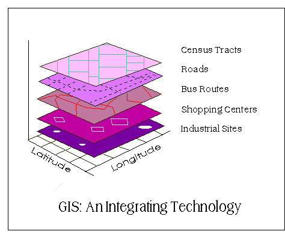
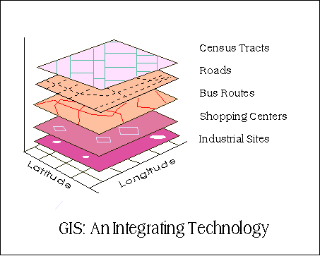
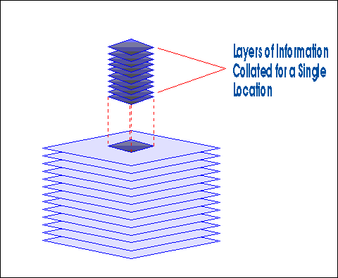
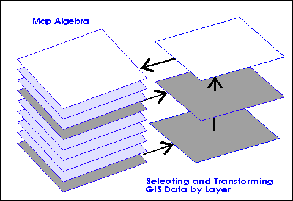
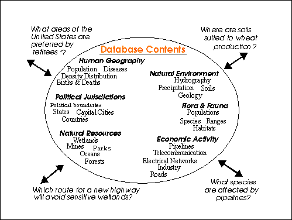

Geographic Information Systems as an Integrating Technology:
Context, Concepts,
and Definitions
These materials were developed by Kenneth E. Foote and Margaret
Lynch, Department of Geography, University of Texas at Austin,
1995.
These materials may be used for study, research, and education in
not-for-profit
applications. If you link to or cite these materials, please
credit
the authors, Kenneth E. Foote and Margaret Lynch, The Geographer's
Craft
Project, Department of Geography, The University of Colorado at
Boulder.
These materials may not be copied to or issued from another Web
server
without the authors' express permission. Copyright ©
2000-2015.
All
commercial rights are reserved. If you have comments or
suggestions,
please contact the author or Kenneth E. Foote at ken.foote@uconn.edu.
This page is also available in a framed
version. For convenience we provide a full Table
of Contents.
1. Information Technologies in Geography
GIS is one of many information technologies that have transformed
the
ways
geographers conduct research and contribute to society. In the past
two
decades, these information technologies have had tremendous effects
on
research techniques specific to geography, as well as on the
general
ways in which scientists and scholars communicate and collaborate.
Discipline-Specific Tools
- Cartography and Computer-Assisted Drafting: Computers
offer
the
same advantages to cartographers that word-processing software
offers
writers.
Automated techniques are now the rule rather than the exception
in
cartographic
production.
- Photogrammetry and Remote Sensing: Aerial
photogrammetry, a
well-established
technique for cartographic production and geographic analysis,
is now
complemented
by the use of "remotely sensed" information gathered by
satellites in
outer
space. Information technologies have made both sorts of
information far
more readily available and far easier to use.
- Spatial Statistics: Statistical analysis and modeling
of
spatial
patterns and processes have long relied on computer technology.
Advances
in information technology have made these techniques more widely
accessible
and have allowed models to expand in complexity and scale to
provide
more
accurate depictions of real-world processes.
- Geographic Information Systems (GIS): These systems
allow
geographers
to collate and analyze information far more readily than is
possible
with
traditional research techniques. As will be noted below, GIS can
be
viewed
as an integrating technology insofar as it draws upon and
extends
techniques
that geographers have long used to analyze natural and
social systems.
General Communication, Research, and Publication Technologies
- Communication and Collaboration: Electronic mail,
discussion
lists,
and computer bulletin boards make it far easier for colleagues
to
communicate
ideas and share ideas, locally, nationally, and internationally.
Distance-learning
techniques make it possible to hold interactive classes and
workshops
simultaneously
at distant locations.
- Access to Library and Research Materials and Sources:
Network access
to both primary and secondary research resources is expanding
rapidly.
From their offices, scholars can now get information held by
libraries,
government agencies, and research institutions all over the
world.
- Publication and Dissemination: Information
technologies
are
reducing
substantially the cost of publishing and distributing
information as
well
as reducing the time required to circulate the latest news and
research
results.
2. The Course of Technological
Innovation
These advances in the application of information technologies in
geography
began several decades ago and will continue to expand their effects
into
the foreseeable future. Scholars who have studied the spread of
technological
innovations in society sometimes divide the process into four phases:
- Initiation: An innovation first becomes available.
- Contagion: Far-ranging experimentation follows to see
how
the innovation
can be adapted to meet a wide variety of research and commercial
needs.
Some, but not necessarily all of these experiments will work.
- Coordination: The most promising applications of the
innovation
gradually gain acceptance and are developed collaboratively. The
coordination
of experimentation helps to distribute the potentially high
costs of
further
development and implementation.
- Integration: A innovation is accepted and integrated
into
routine
research tasks.
In geography, many innovations in the application of information
technologies
began in the late 1950s, 1960s and early 1970s. Methods of
sophisticated
mathematical and statistical modeling were developed and the first
remote
sensing data became available. Researchers began also to envision
the
development
of geographic information systems. The mid-1970s to early 1990s was
a
period
of contagion. The first commercially available software for GIS
became
available in the late 1970s and spurred many experiments, as did the
development
of the first microcomputers in the early 1980s. This was an exciting
time
in which the development of powerful software coupled with the
availability
of inexpensive computers permitted many researchers to test new
ideas
and
applications for the first time. In the early 1990s, or perhaps just
a
bit earlier, many innovations entered the coordination phase even as
other
experimentation continued at a fast pace. The strengths and
weaknesses
of many information technologies were by then apparent, and
researchers
began to work together to cultivate the most promising applications
on
a large scale. Arguably, the complete integration of information
technologies
in geography has yet to be achieved except perhaps in a few
relatively
specialized research areas. Complete integration across the
discipline
may, in fact, be many years away.
3. GIS as an Integrating Technology
In the context of these innovations, geographic information systems
have
served an important role as an integrating technology. Rather than
being
completely new, GIS have evolved by linking a number of discrete
technologies
into a whole that is greater than the sum of its parts. GIS have
emerged
as very powerful technologies because they allow geographers to
integrate
their data and methods in ways that support traditional forms of
geographical
analysis, such as map overlay analysis as well as new types of
analysis
and modeling that are beyond the capability of manual methods. With
GIS
it is possible to map, model, query, and analyze large quantities of
data
all held together within a single database.
The importance of GIS as an integrating technology is also
evident
in its pedigree. The development of GIS has relied on innovations
made
in many different disciplines: Geography, Cartography,
Photogrammetry,
Remote Sensing, Surveying, Geodesy, Civil Engineering, Statistics,
Computer
Science, Operations Research, Artificial Intelligence, Demography,
and
many other branches of the social sciences, natural sciences, and
engineering
have all contributed. Indeed, some of the most interesting
applications
of GIS technology discussed below draw upon this interdisciplinary
character
and heritage.
4. Geographic Information Systems: A
Generic Definition
GIS is a special-purpose digital database in which a common spatial
coordinate
system is the primary means of reference. Comprehensive GIS require
a
means of:
- Data input, from maps, aerial photos, satellites, surveys, and
other
sources
- Data storage, retrieval, and query
- Data transformation, analysis, and modeling, including spatial
statistics
- Data reporting, such as maps, reports, and plans
Three observations should be made about this
definition:
First, GIS are related to other database applications, but
with an important difference. All information in a GIS is linked to
a
spatial
reference. Other databases may contain locational information (such
as
street addresses, or zip codes), but a GIS database uses
geo-references
as the primary means of storing and accessing information.
Second, GIS integrates technology. Whereas other technologies
might
be used only to analyze aerial photographs and satellite images, to
create
statistical models, or to draft maps, these capabilities are all
offered
together within a comprehensive GIS.
Third, GIS, with its array of functions, should be viewed as
a
process
rather than as merely software or hardware. GIS are for making
decisions.
The way in which data is entered, stored, and analyzed within a GIS
must
mirror the way information will be used for a specific research or
decision-making
task. To see GIS as merely a software or hardware system is to miss
the
crucial role it can play in a comprehensive decision-making process.
5. Other Definitions
Many people offer definitions of GIS. In the range of definitions
presented
below, different emphases are placed on various aspects of GIS. Some
miss
the true power of GIS, its ability to integrate information and to
help
in making decisions, but all include the essential features of
spatial
references and data analysis.
- A definition quoted in William
Huxhold's
Introduction
to Urban Geographic Information Systems. (New York: Oxford
University Press, 1991), page 27, from some GIS/LIS '88
proceedings:
- ". . . The purpose of a traditional GIS is first and foremost
spatial analysis.
Therefore, capabilities may have limited data capture and
cartographic
output. Capabilities of analyses typically support decision
making for
specific projects and/or limited geographic areas. The map
data-base
characteristics
(accuracy, continuity, completeness, etc) are typically
appropriate for
small-scale map output. Vector and raster data interfaces may be
available.
However, topology is usually the sole underlying data structure
for
spatial
analyses."
-
- C. Dana Tomlin's definition, from
Geographic
Information Systems and Cartographic Modeling (Englewood Cliffs,
NJ:
Prentice-Hall,1990),
page xi:
-
"A geographic information system is a facility for preparing,
presenting,
and interpreting facts that pertain to the surface of the earth.
This
is
a broad definition . . . a considerably narrower definition,
however,
is
more often employed. In common parlance, a geographic
information
system
or GIS is a configuration of computer hardware and software
specifically
designed for the acquisition, maintenance, and use of
cartographic
data."
-
- From Jeffrey Star and John Estes, in
Geographic
Information Systems: An Introduction (Englewood Cliffs, NJ:
Prentice-Hall,
1990), page 2-3:
-
"A geographic information system (GIS) is an information system
that is
designed to work with data referenced by spatial or geographic
coordinates.
In other words, a GIS is both a database system with specific
capabilities
for spatially-reference data, as well [as] a set of operations
for
working
with data . . . In a sense, a GIS may be thought of as a
higher-order
map."
-
- And from Understanding GIS: The
ARC/INFO
Method
(Redlands, CA: Environmental System Research Institute, 1990),
page 1.2:
-
A GIS is "an organized collection of computer hardware,
software,
geographic
data, and personnel designed to efficiently capture, store,
update,
manipulate,
analyze, and display all forms of geographically referenced
information."
6. Related Terms: Acronyms,
Synonyms, and
More
One reason why it can be difficult to agree on a single definition
for
GIS is that various kinds of GIS exist, each made for different
purposes
and for different types of decision making. A variety of names have
been
applied to different types of GIS to distinguish their functions and
roles.
One of the more common specialized systems, for instance, is usually
referred
to as an AM/FM system. AM/FM is designed specifically for
infrastructure
management. It is defined further below.
In addition, some systems that are similar in both function
and
name to GIS, nevertheless are not really geographic information
systems
as defined above. Broadly, these similar systems do not share
GIS's
ability
to perform complex analysis. CAD systems, for example, are
sometimes
confused
with GIS. Not long ago, a major distinction existed between GIS
and
CAD,
but the their differences are beginning to disappear. CAD systems,
used
mainly for the precise drafting required by engineers and
architects,
are
capable of producing maps though not designed for that purpose.
However,
CAD originally lacked coordinate systems and did not provide for
map
projections.
Nor were CAD systems linked to data bases, an essential feature of
GIS.
These features have been added to recent CAD systems, but
geographic
information
systems still offer a richer array of geographic functions.
The use of so many acronyms, synonyms, and terms with
related
meaning can cause some confusion. Consider a few of the most
widely
used
terms:
- AGIS (Automated Geographic Information System)
- AM/FM (Automated Mapping and Facilities
Management):
Automated mapping by itself allows storage and manipulation of
map
information.
AM/FM systems add the ability to link stores of information
about the
features
mapped. However, AM/FM is not used for spatial analysis, and it
lacks
the
topological data structures of GIS.
- CAD (Computer-Assisted Drafting): These
systems
were designed for drafting and design. They handle spatial data
as
graphics
rather than as information. While they can produce high-quality
maps,
generally
they are less able to perform complex spatial analyses.
- CAM (Computer-Assisted Mapping, or Manufacturing)
- Computerized GIS
- Environmental Information System
- GIS (Geographic Information System)
- Geographically Referenced Information System
- Geo-Information System
- Image-Based Information System
- LIS (Land Information System)
- Land Management System
- Land Record System
- Land Resources Information System
- Multipurpose Cadastre:
- Multipurpose Geographic Data System
- Multipurpose Land Record System
- Natural Resources Inventory System
- Natural Resources Management Information System
- Planning Information System
- Resource Information System
- Spatial Data Handling System
- Spatial Database
- Spatial Information System
7. The GIS View of the World
GIS provide powerful tools for addressing geographical and
environmental
issues. Consider the schematic diagram below. Imagine that the GIS
allows
us to arrange information about a given region or city as a set of
maps
with each map displaying information about one characteristic of the
region.
In the case below, a set of maps that will be helpful for urban
transportation
planning have been gathered. Each of these separate thematic maps is
referred
to as a layer, coverage, or level. And each layer has been
carefully
overlaid on the others so that every location is precisely matched
to
its
corresponding locations on all the other maps. The bottom layer of
this
diagram is the most important, for it represents the grid of a
locational
reference system (such as latitude and longitude) to which all the
maps
have been precisely registered.

Once these maps have been registered carefully within a common
locational
reference system, information displayed on the different layers
can be
compared and analyzed in combination. Transit routes can be
compared to
the location of shopping malls, population density to centers of
employment.
In addition. single locations or areas can be separated from
surrounding
locations, as in the diagram below, by simply cutting all the
layers of
the desired location from the larger map. Whether for one location
or
the
entire region, GIS offers a means of searching for spatial
patterns and
processes.

Not all analyses will require using all of the map layers
simultaneously.
In some cases, a researcher will use information selectively to
consider
relationships between specific layers. Furthermore, information
from
two
or more layers might be combined and then transformed into a new
layer
for use in subsequent analyses. This process of combining and
transforming
information from different layers is sometimes called map
"algebra"
insofar
as it involves adding and subtracting information. If, for
example, we
wanted to consider the effects of widening a road, we could begin
with
the road layer, widen a road to its new width to produce a new
map, and
overlay this new map on layers representing land use.

8. The Appeal and
Potential
of GIS
The great appeal of GIS stems from their ability to integrate great
quantities
of information about the environment and to provide a powerful
repertoire
of analytical tools to explore this data. The example above
displayed
only
a few map layers pertaining to urban transportation planning. The
layers
included would be very different if the application involved
modeling
the
habitat of an endangered species or the environmental consequences
of
leakage
from a hazardous materials site.
Imagine the potential of a system in which dozens or
hundreds
of maps layers are arrayed to display information about
transportation
networks, hydrography, population characteristics, economic
activity,
political
jurisdictions, and other characteristics of the natural and social
environments.
Such a system would be valuable in a wide range of situations--for
urban
planning, environmental resource management, hazards management,
emergency
planning, or transportation forecasting, and so on. The ability to
separate
information in layers, and then combine it with other layers of
information
is the reason why GIS hold such great potential as research and
decision-making
tools.

9. Application Areas
GIS are now used extensively in government, business, and research
for
a wide range of applications including environmental resource
analysis,
landuse planning, locational analysis, tax appraisal, utility and
infrastructure
planning, real estate analysis, marketing and demographic analysis,
habitat
studies, and archaeological analysis.
One of the first major areas of application was
in
natural
resources management, including management of
- wildlife habitat,
- wild and scenic rivers,
- recreation resources,
- floodplains,
- wetlands,
- agricultural lands,
- aquifers,
- forests.
One of the largest areas of application has been in
facilities
management. Uses for GIS in this area have included
- locating underground pipes and cables,
- balancing loads in electrical networks,
- planning facility maintenance,
- tracking energy use.
Local, state, and federal governments have found
GIS
particularly
useful in land management. GIS has been commonly applied in
areas
like
- zoning and subdivision planning,
- land acquisition,
- environmental impact policy,
- water quality management,
- maintenance of ownership.
More recent and innovative uses of GIS have used
information
based on street-networks. GIS has been found to be
particularly
useful in
- address matching,
- location analysis or site selection,
- development of evacuation plans.
10. Many Software Systems Support GIS
Decision
Making
These days, dozens of software systems offer GIS decision-making
capabilities.
The range and number available sometimes make it difficult to
discern
the
differences among systems and the strengths and limitations of each.
The
important point to remember is that there are as many different
types
of
GIS software systems as there are decision-making processes.
Particular
GIS software systems are often specialized to fit certain types of
decision
making. That is, they are customized to meet needs specific to
demographic
forecasting, transportation planning, environmental resource
analysis,
urban planning, and so on. These systems may respond well to
individual
problems, but they are also limiting. Special- purpose GIS designed
for
airport planning and maintenance, for instance, will not be well
suited
to demographic modeling.
Other software systems are not so specialized. The Intergraph
Corporation's
MGE/MGA system or ArcGIS (produced by the Environmental Systems
Research
Institute) have become well-known because they
can be used in a wide number of applications. These general
purpose
systems
also offer features that can be customized to meet various
individual
needs.
Other systems such as MapInfo attempt
to provide functions that will be of value in one or more of the
broad
application domains, for instance in demographic analysis or
marketing
research. Yet quite apart from these more general systems, there
are
dozens
of very specialized software systems that are best suited to one
task,
one application, or even to just one part of a broader decision-
making
process, for example for storing maintenance records of a highway
system
or for planning the expansion of an electric distribution network.
Further Reading
Chapter 1 in Bolstad, Paul. 2005. GIS Fundamentals: A First Text on
Geographic Information Systems, 2nd. ed. White Bear
Lake,
MN: Eider Press.
Chapter 1 in Chang, Kang-tsung. 2006. Introduction to Geographic Information
Systems, 3rd. ed. Boston: McGraw Hill.
Chapter 1 in Clarke, Keith C. 2003. Getting Started with Geographic
Information Systems, 4th ed. Upper Saddle River, NJ:
Prentice Hall.
DeMers, Michael N. 2005. Fundamentals
of Geographic Information Systems, 3rd ed. Wiley.
Chapter 1 in Lo, C.P. and Albert K.W. Yeung. 2002. Concepts and Techniques of Geographic
Information Systems. Upper Saddle River, NJ: Prentice
Hall.
Chapter 1 in Longley, Paul A., Michael F. Goodchild, David J.
Maguire,
and David W. Rhind. 2005. Geographic
Informaiton Systems and Science, 2nd ed. Hoboken, NJ:
Wiley.
Last revised 2014.9.11. KEF.